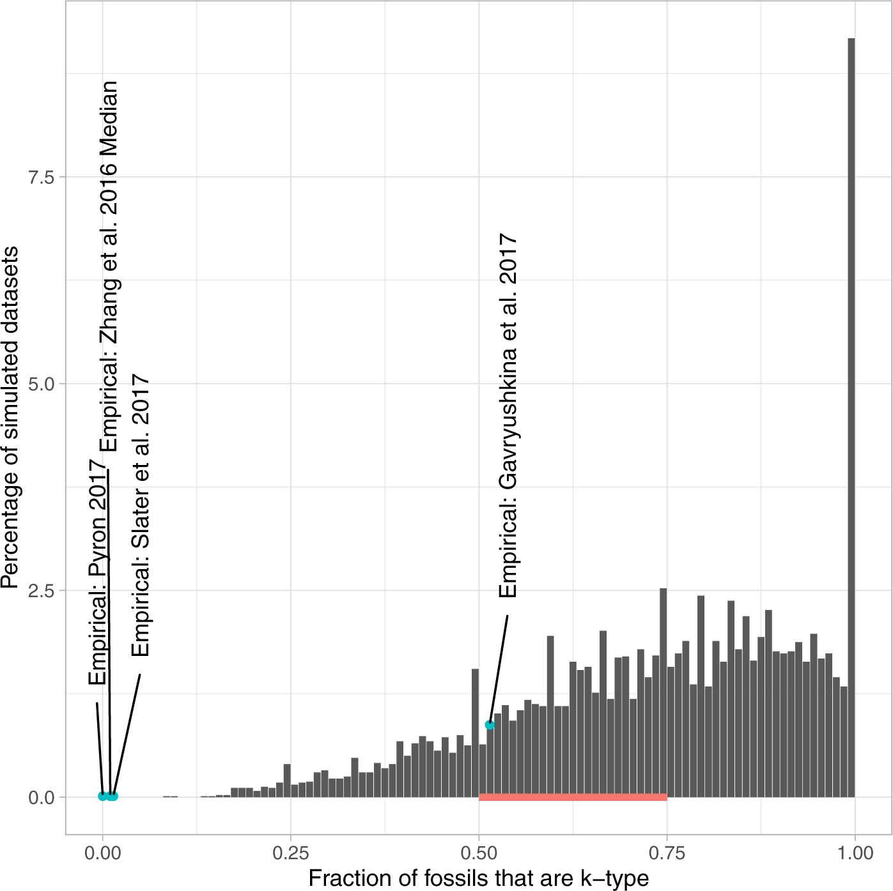
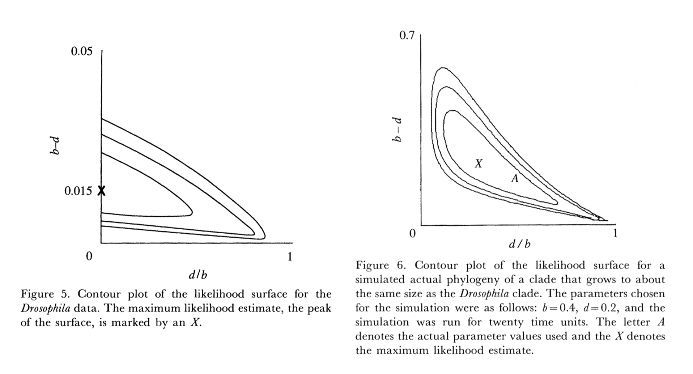

TLDR
New preprint by Jeremy Beaulieu and me on a fossilized birth-death model that uses at most one fossil per species, which is more appropriate for a lot of empirical datasets.
Here is the problem
If you only interview lottery winners, you’ll get a warped sense of odds of winning the lottery. If you only look at traits that are variable, you’ll get a warped sense of how quickly characters change. A few years ago, Jeremy Beaulieu and I showed that the same is happening with use of fossils in popular fossilized birth death (FBD; Stadler, 2010) analyses. The model assumes that organisms are being fossilized and then recovered at a constant rate. Everyone knows that this isn’t true (you need sedimentary rocks of the right age, for example, and those aren’t evenly distributed), but it might be a decent enough approximation for a first pass. But the model also assumes that any fossil in a group once discovered has the same chance of being included on a tree, no matter if it’s the oldest, youngest, or 17th fossil for that species. The model does distinguish the most recent fossil (“m-type”) from any of the older fossils in a lineage (k-type), but there’s nothing special about the two kinds, so they are all fit by the same fossil recovery rate parameter. We showed (Beaulieu & O’Meara, 2023) that across a range of simulations (also shown in simulations by Zhang et al. (2016)), there should be a lot of k-type intermediate fossils: for a given fossil species, say T. rex, we don’t expect to find just one fossil with no descendants (the m-type fossil) but actually multiple fossils from the species, all but the most recent being k-type fossils. However, we showed in our paper that a lot of empirical datasets (but not all) have a near complete absence of such fossils:

So the models are being fed data that for whatever reason are missing a lot of fossils along branches. The models don’t know about this biased input (same as a model of the lottery won’t know if only those winning are given as data), so the way they can explain that each fossil species has only one specimen (or just a few) discovered is by having a low fossilization rate and a high rate of species turnover: if each species only survives for a short time before going extinct or speciating into two new species, then it makes sense that there are few fossils per species, even if there are lots of fossils across the clade of interest. It’s not the abundance or paucity of fossils themselves that’s the problem, but the biased sampling of them per species that can lead to problematic results. It is like excluding invariant sites when looking at morphology (Lewis 2001): the issues don’t come from not having enough variable sites, but the biased complete exclusion of invariant sites from models that expect to see them makes the models estimate really fast - and wrong - rates of evolution.
I don’t think we communicated this well. Interpretations seemed to be that we just don’t like fossils (not true - see below) or that we were talking about problems from a low fossilization rate (it’s not that, it’s the bias in which fossils are used). Our point was that sufficiently biased data led to problems, so much so that one might actually get better estimates of diversification parameters by excluding the biased data (in this case, fossils) and using just a smaller modern dataset. Barido-Sottani and Morlon (2026) found a similar situation when there is not enough information to accurately place fossils (not due to bias, just insufficient data) - results can sometimes be as good or better by excluding fossils (but in other cases fossils can dramatically help).
But in phylogenetics, as in the rest of life, a common response to someone saying “there’s a problem” is “ok, but I’m careful.” Driving is dangerous: it’s good to be careful, but it’s even better to invent seatbelts, airbags, and protected bike lanes. Covid remains dangerous: it’s good to be vaguely “careful” around people who are showing what we think are symptoms, but it’s better if everyone has a mask and is vaccinated. To actually change human behavior it’s not enough to point out a problem, there has to be a fairly easy solution, too1.
Yo, we solved it
So, just as Maddison (2006) showed a problem in conflating diversification differences and trait evolution differences and later was part of a team that developed a solution (Maddison et al. 2007), we’ve also now developed what we think is a solution to the biased data problem while still allowing use of the data (though we’re no Maddison et al.).
We have a preprint out on this here: https://doi.org/10.64898/2026.08.13.744712.
The original FBD model (Stadler, 2010) requires data with random fossil occurrences. The stratigraphic range model (Stadler et al., 2018) requires data with just a start and end time for lineages. The new model, which we’re calling the FBDT model, is a third flavor for a different kind of data: one where we include only the most recent recovered fossil for an extinct species. This matches the kind of data used in a lot of empirical datasets. “Most recent recovered” corresponds to the m-type fossils in the canonical FBD model, but basically whatever one fossil you include per species is definitionally this type of fossil - it’s not the last Lonesome George specimen, just any specimen. The model might work slightly better if one takes the youngest rather than oldest specimen per species, but honestly, I suspect it doesn’t matter much - the main point is that if the data are biased such that you have a lot more m-type than k-type fossils - in other words, often no more than one specimen per fossil species - the new FBDT model gives better rate estimates than other models. But check the preprint to see if you agree.
My hope is that this just gets added to the bestiary of FBD models. Have stratigraphic data? Cool, use the stratigraphic range model. Using every fossil per species from Paleobiology Database? Cool, (probably) use the standard FBD model. Only using one specimen per fossil species? Use the FBDT model. It’s not a replacement, and the other models are not wrong or flawed - it’s just a matter of making sure the model used is appropriate to the data provided. It’s like the Lewis MKV model: it doesn’t mean you can’t use a Cavendar-Farris-Neyman model for binary data, but if you have a dataset that excludes invariant sites, it’s the right model (or, more correctly, least bad) to use. A vague rule of thumb in the preprint is that if you don’t have at least as many k-type fossils as m-type fossils, FBDT might be better than standard FBD (there can be biological cases where one only has m-type terminal fossils under true unbiased fossil sampling, but that is for high turnover rate and low fossil recovery rate, and FBDT should still work in that case).
On parameters
There are various parameters people talk about with diversification models, with typical units:
- Speciation rate: λ (events/MY)
- Extinction rate: μ (events/MY)
- Net diversification rate: λ-μ (net events/MY)
- Turnover rate: λ+μ (total events/MY)
- Extinction fraction: μ/λ (unitless)
Or the reciprocals for wait times:
- Expected species lifetime: 1/(λ+μ) (MY until event)
- Wait time for speciation: 1/λ (MY until event)
- Wait time for extinction: 1/μ (MY until event)
That’s a lot of different parameters, but not a lot of Greek symbols, just the two, λ and μ. It’s because there are only two degrees of freedom here. Basically, if you tell me any two parameters above, I can calculate all of the others2. And while it’s convention to write these with λ and μ, I could instead rewrite them using a symbol for, say, extinction fraction and turnover: the equations are a little messier, but it’s just algebra, and there’s nothing special about which terms get the Greek symbols.
Why does this matter? Two main reasons:
- For people, some parameters are easier to understand than others. If I say, “the speciation rate is 0.14 events/MY” is that fast or slow? But if I use the reciprocal, “the average wait time until a speciation event on a lineage is 7 million years” you have a much more intuitive sense of the speed. This matters a lot at extremes: your analysis says the speciation rate is 0.0001 or 7.3 events/MY - ok, not weird, maybe, but that actually corresponds to waiting time for speciation of 10,000 million years (aka 10 billion years) in the first case and 0.14 MY (aka 140,000 years) in the second case.
- Some of the discussion in response to our 2023 paper has been “well, they estimated parameters A and B, and we estimated C and D, so maybe it’s just a problem with A and B? 🤷.” One can do algebra to go from C and D to A and B, or vice versa, to directly check - if you have estimates for two you have estimates for all. Since all this zoo of parameters only has two degrees of freedom, it can’t be the case that A and B have a problem but C and D don’t (it is technically possible for A and B to have a problem and C does but D doesn’t, if things align particularly well) - everything is tied together.
That’s not to say everything is equally easy to estimate. Extinction rates are notoriously and justifiably hard to precisely estimate, for example. This essentially comes from the relative flatness of a likelihood surface. For a maximum likelihood estimate, you’re trying to find the highest point. Compare to finding the highest point on a landscape. All you have is a way to estimate the elevation where you are, a record of elevation at past places you’ve been, and, if you’re lucky, info on which way the ground at your feet is sloping (gradient) - you can’t just look around and “see” a mountain, you have to be standing on it to know its height and to have been in the lowlands to know it’s higher. In such a scenario, it’s a lot easier to find, say, the highest point in Japan, especially if you start on the slopes of Mt. Fuji, than the highest point in Florida, which is quite flat. For Bayesian approaches, the goal isn’t to find the single highest point: it’s more that it’s to find the height of all the land by spending more time at the highest elevations, but it’s still easier if there are smooth, steep peaks. Even with the first papers in this area, it’s been clear that some directions are steeper than others, and it’s easier to estimate parameters lying on a steep axis than those on a shallower axis:

Use the force software, Luke
Incidentally, another cool thing in our 2023 paper, Jeremy’s implementation of both the standard FBD model and the stratigraphic range model, within the hisse family of models in hisse in R, so you can do hidden states’ effects on diversification parameters using both fossil and modern data in a likelihood framework, seems also pretty overlooked. Do carnivorous dinosaurs (including most birds) have a lower diversification rate than herbivorous ones, or is the heterogeneity in diversification rates explained by some other factor? hisse has been able to do that with a peer-reviewed implementation for three years! Go forth and use it already!!
Given that we know the likelihood surfaces can be pretty flat for diversification model parameters, I personally like having the ability to do this in a likelihood framework: if we combine flat likelihood surfaces with priors, as in the various widely used Bayesian implementations, the results you get back can reflect the prior beliefs we put into the analysis (or copied from one of the excellent tutorials out there), and note that different individual priors can interact to make an unexpected joint prior. Putting prior info in can be really helpful in some areas (I personally like priors for fossil ages a lot), but for this area, it can be good to try to give the data the loudest voice one can. It’s still good to estimate uncertainty, though (shameless self-promotion, but there are other approaches, too - people often overlook that ape::birthdeath() gives you uncertainty estimates automatically, for example). And just for robustness, doing an analysis with and without priors can be informative (though in rare cases, even if priors have no effect, a likelihood and Bayesian approach can sometimes give non-overlapping estimates: likelihood seeks the peak, Bayesian seeks the credible area, so the former might choose a tall narrow spike but the latter might choose a neighoring slightly less tall but far wider hill).
The new FBDT model is also in the GitHub version of hisse, but has not benefited from formal peer review, so I wouldn’t use that yet - but the other stuff is as fine as phylogenetic software gets these days (I think the FBDT work is fine, too, and I wouldn’t try to publish it otherwise - but I could be wrong).
I like fossils (summer vacation)
I worry that our work on whether or not fossils help in this problem space may leave the impression that I’m anti-fossil. I love fossils! I grew up wanting to be a paleontologist (until I was amazed by the power of modern phylogenetics taking Brian Farrell’s intro bio class in college) and still love ’em. I’m happy to be co-advising an Earth, Environmental, and Planetary Sciences (aka geology) PhD student now (Laya Aban Amini).
But mostly I added this section to the blog post because I wanted a hook to show my summer vacation photos. My son was taking a math course in England over the summer (he also consulted on the math appendix for the FBDT preprint, earning his first acknowledgement), and my wife and I went over to visit with him. But a highlight of the trip was going to Lyme Regis to look at the fossils!
Citations
- Barido-Sottani, J, and H. Morlon. 2026. “Integrating fossils samples with heterogeneous diversification rates: a combined Multi-Type Fossilized Birth-Death model” Systematic Biology https://doi.org/10.1093/sysbio/syag011
- Beaulieu, J. M., & O’Meara, B. C. 2023. “Fossils do not substantially improve, and may even harm, estimates of diversification rate heterogeneity. Systematic Biology, 72(1), 50-61. https://doi.org/10.1093/sysbio/syac049
- Lewis, P. 2001. “A Likelihood Approach to Estimating Phylogeny from Discrete Morphological Character Data” Systematic Biology 50(6): 913–925. https://doi.org/10.1080/106351501753462876
- Maddison, W.P. 2006. “Confounding assymetries in evolutionary diversificatin and character change.” Evolution, 60: 1743-1746. https://doi.org/10.1111/j.0014-3820.2006.tb00517.x
- Maddison, W. P., Midford, P. E., & Otto, S. P. 2007. “Estimating a binary character’s effect on speciation and extinction”. Systematic Biology, 56(5), 701-710. https://doi.org/10.1080/10635150701607033
- Stadler, T. 2010. “Sampling-through-time in birth-death trees.” Journal of Theoretical Biology, 267(3), 396-404. https://doi.org/10.1016/j.jtbi.2010.09.010
- Stadler, T., Gavryushkina, A., Warnock, R. C. M., Drummond, A. J., & Heath, T. A. 2018. The fossilized birth-death model for the analysis of stratigraphic range data under different speciation modes. Journal of Theoretical Biology, 3447(14), 41-55. https://doi.org/10.1016/j.jtbi.2018.03.005
- Zhang, C. Stadler, T., Klopfstein, S., Heath, T.A., Ronquist, F. 2016. “Total-Evidence Dating under the Fossilized Birth–Death Process.” Systematic Biology 65(2: )228–249. https://doi.org/10.1093/sysbio/syv080
To subscribe, go to https://brianomeara.info/blog.xml in an RSS reader.
Footnotes
It’s like people being told to eat more fiber in their diets, and the rise of foods with sneaky fiber, like in candy bars. We should make an R package that does all the right things for phylogenetics analyses but easily for the user: “Have good macroevolution health: add
phiberto your R workflow”↩︎With the trivial exceptions of just giving me two that are the reciprocal of each other: if I know only 1/λ and λ, it’s impossible to calculate μ, for example. But for any of the popular ones (speciation rate, extinction rate, turnover rate, net diversification rate, extinction fraction) any two gives you all the others.↩︎
Citation
@online{o'meara2026,
author = {O’Meara, Brian},
title = {Fossilized Birth-Death with Terminal Taxa Only},
date = {2026-08-17},
url = {https://brianomeara.info/posts/fbdt/},
langid = {en}
}